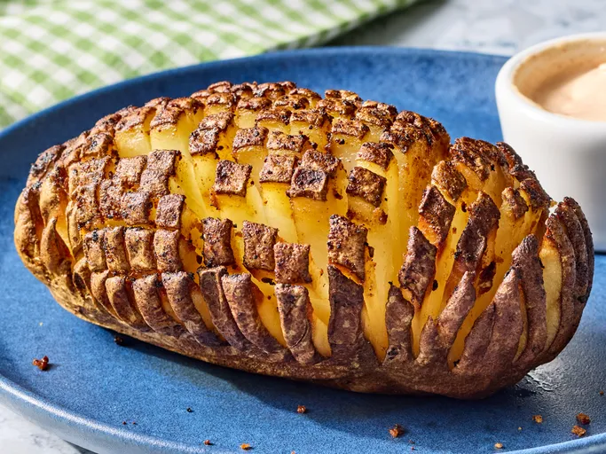

Bloomin' potatoes, savory and salty, are tender with a crisp edge, The garlic-onion seasoning is great, the potatoes are delicios, and the dipping sauce is tasty.
Prep Time:10 mins Cook Time:15 mins
Total Time: 25 mins Servings:4
__________________________________________________________________Wash and scrub potatoes thoroughly until cleaned.
Using a sharp knife, slice potatoes crosswise into ⅛-inch-thick cuts, stopping when the knife reaches ½-inch from the bottom so the potato remains attached at the base.
Rotate the potato and repeat lengthwise, making ⅛-inch-thick cuts without slicing all the way through.
cut potatoes into a 2-quart square baking dish. Cover with vented plastic wrap. Cook in the microwave on high for 5 minutes
Combine garlic powder, onion powder, paprika, salt, and pepper in a small bowl. Brush potatoes with melted butter and sprinkle evenly with seasoning mixture.
Preheat the oven to 425 degrees F (220 degrees C). Line a baking pan with aluminium foil and place potatoes on the prepared pan.
Bake in the preheated oven until browned and crispy, 15 to 20 minutes.
Stir together mayonnaise, sour cream, ketchup, horseradish, vinegar, garlic powder, onion powder, paprika, salt, and pepper in a medium bowl until smooth.
Serve potatoes hot with dipping sauce on the side.
Calories: 412 || Fat: 35g || Carbs:23g || Protein: 3g
Home